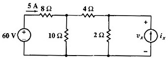

Question.
Given the following circuit, find voltage vx in current source.

Solution.
This is a great first example to explore the posibilities of Symbulator, since it can't be solved with SPICE for it includes a source with unknown value (unless you use trial and error method until you find an approximate answer). With Symbulator, you solve it easily and fast.
Clean ix variable.
DelVar ix
Label nodes and elements. Define a variable containing circuit description. I used this description:
"e60,1,0,60; r8,1,2,8; r10,2,0,10; r4,2,x,4; r2,x,0,2; jx,0,x,ix"àcir
Simulate this circuit using direct current analysis.
sq\dc(cir)
Done
Solve for x in expression of current through voltage source.
solve(ir8=5,ix)
ix=1
Evaluate voltage in current source with previous answer.
vx|ans(1)
8
Answer: 8 volts. This is the right answer for voltage vx. Notice that using Symbulator this problem have been solved in only four steps (and may be solved in two), while by hand it takes a lot of steps, and by SPICE it takes several iterations.